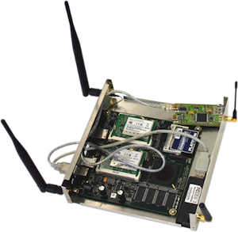
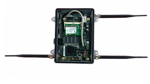
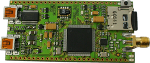

The FUB testbed however is still being actively used by experimenters, maintained. For more up-to-date information on this testbed please visit http://www.des-testbed.net/.
The DES-Testbed is a hybrid wireless network testbed located on the campus of the Freie Universität Berlin. DES-Testbed comprises of 100 hybrid DES-Nodes consisting of a wireless mesh and a wireless sensor network as shown in Figure below. The network of mesh outers, called DES-Mesh nodes are deployed to act as a backbone and to facilitate the DES-WSN nodes. DES-WSN consists of a MSB-A2, with temperature and humidity sensors. Currently, DES-Testbed consists of 110 DES-Nodes with plans for future extensions. The objective of DES-Testbed is to provide a testbed to the user for development and evaluation of different algorithms, for WSN and WMN, using experimentation.
The mesh routers are based on the PC Engines Alix2c2/Alix2d2 and Alix3d2 embedded PC boards with the following features:
| CPU | 500 MHz AMD Geode LX800 |
| DRAM | 256 MB DDR DRAM |
| Ethernet | 2 Ports |
| Expansion |
2 Mini PCI slots 2 USB 2.0 ports |
| Storage | CompactFlash socket |
| Enclosure | Custom |
Each router is equipped with three or more IEEE 802.11a/b/g network interface cards (NICs). Currently, we use one LogiLink WL0025 dongle based on the RT2501U architecture with an RT2571W BB/MAC IC and RT2528 RF IC. This NIC features an on-board R-SMA connector and a 4 dBi Hi-Gain antenna. The antennas are mounted at the side panels of the router using extension cables. Additionally, all mesh routers are equipped with two Atheros-based MiniPCI cards (WLM54SAG) connected with dual-band antennas. The indoor nodes use a custom case that is manufactured at Freie Universität Berlin.
10 outdoor nodes are currently being deployed. They use the weather-proof 4A2E kit and special outdoor antennas.
The primary Ethernet port of all nodes is used to boot the operating system over the network and to mount the root file system. The mesh routers have no need for local persistent memory and store their data on a central server. The mesh routers mainly are mains powered, but in locations that lack access to the power supply system, Power over Ethernet (PoE) adapters are used.
Each mesh router is equipped with a MSB-A2 sensor node (developed at Freie Universität Berlin) that is connected via a USB cable which provides power supply and is used to write firmware images to the flash memory.
The MSB-A2 sensor nodes use an LPC2387 microcontroller produced by NXP Semiconductors. The frequency of the 32-bit ARM7 TDMI-S core based microcontroller can be dynamically configured at runtime to up to 72 MHz, depending on the sensor network application and energy requirements. The TI (formerly Chipcon) CC1100 transceiver uses the ISM band at 863 to 870 MHz with a maximum data rate of 500 kbit/s. The MSB-A2 nodes set up a wireless testbed in parallel to the mesh routers that is fully orthogonal to the frequency band used by IEEE 802.11.
| Microcontroller | NXP Semiconductors LPC2387 |
| CPU Frequency | up to 72 MHz |
| RAM | 98 KiB |
| Flash | 512 KiB |
| Transceiver | Chipcon CC1100 |
| Expansion | GPIO pins mini USB 2.0 port |
| Storage | microSD-card socket |
The sensor nodes are equipped with a Sensirion SHT-11 temperature and humidity sensor. Depending on the experiment scenario, extensions are connected on-demand via the general purpose input/output pins (GPIO) or the second on-board mini USB port. In addition to the internal 512 KiB flash memory, microSD-cards can be used. Unlimited data storage is available via the Ethernet backbone provided by the mesh routers.